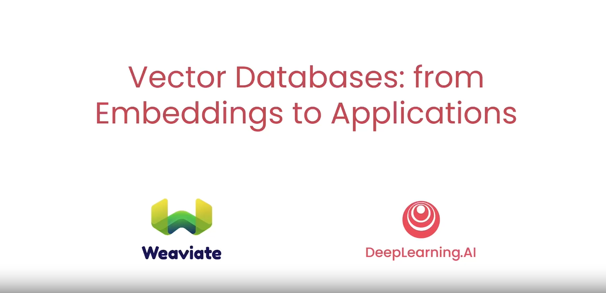

DeepLearning.AI Short Course Reviews
If you're aiming to pursue a career in generative AI, DeepLearning.AI's short courses are an excellent way to learn the next set of essential skills. These courses are designed to efficiently advance your generative AI expertise by teaching you new skills, tools, and concepts. Here's my reviews in plaintexts:
- ChatGPT Prompt Engineering for Developers
- Large Language Models with Semantic Search
- LangChain for LLM Application Development
- How Diffusion Models Work
- Building Systems with the ChatGPT API
- LangChain Chat with Your Data
- Building Generative AI Applications with Gradio
- Evaluating and Debugging Generative AI
- Finetuning Large Language Models
- How Business Thinkers Can Start Building AI Plugins With Semantic Kernel
- Understanding and Applying Text Embeddings
- Pair Programming with a Large Language Model
- Functions, Tools, and Agents with LangChain
- Vector Databases: from Embeddings to Applications
Vector Databases: from Embeddings to Applications

LLMs can be used for many tasks but sometimes we need to use up-to-date information and customize them up to our needs. We use RAG powered by Vector Databases. Vector database is key for any Semantic search application. How to use a similar function. The course contains 6 lessons as the following:
- How to obtain vector representations of data?
- Embeddings
- Searching for Similar Vectors
- Distance Metrics
- Approximate Nearest Neighbors
- ANN: Approximate Nearest Neighbor(ANN)
- Hierarchical Navigable Small World (HNSW)
- Vector DB's
- CRUD operations (Create, Read, Update, Delete)
- Objects + Vectors
- Inverted Index - filtered search
- Sparse vs Dense Search
- ANN search over Dense embeddings
- Sparse search
- Hybrid Search
- Applications of Vector DBs in Industry
Large Language Models with Semantic Search
- Keyword vs. Semantic Search
- Ranking Responses
- Embeddings
- Dense Retrieval
- Evaluation Methods
- Search-Powered LLMs (Language Learning Models)
My opinion about VectorDBs
Vector databases are trendy now, with many startups trying to provide their services such as:
Pinecone,
Milvus,
Chroma,
Weaviate,
Deep Lake,
Qdrant,
Elasticsearch,
Vespa,
Vald,
ScaNN, and
Pgvector.
While promising, it's unclear if vector databases will become as ubiquitous as their backers claim. It's not yet
clear if vector databases will become independent databases, or if vector search will instead become a new
feature merged into existing SQL and NoSQL databases.